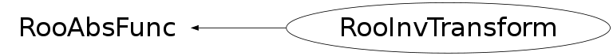

class RooInvTransform: public RooAbsFunc
Lightweight function binding that returns the inverse of an input function binding Apply the change of variables transformation x -> 1/x to the input function and its range. The function must be one dimensional and its range cannot include zero.
Function Members (Methods)
public:
| RooInvTransform(const RooAbsFunc& func) | |
| RooInvTransform(const RooInvTransform&) | |
| virtual | ~RooInvTransform() |
| static TClass* | Class() |
| UInt_t | RooAbsFunc::getDimension() const |
| virtual Double_t | getMaxLimit(UInt_t index) const |
| virtual Double_t | getMinLimit(UInt_t index) const |
| virtual const char* | RooAbsFunc::getName() const |
| virtual TClass* | IsA() const |
| Bool_t | RooAbsFunc::isValid() const |
| Int_t | RooAbsFunc::numCall() const |
| virtual Double_t | operator()(const Double_t* xvector) const |
| RooAbsFunc& | RooAbsFunc::operator=(const RooAbsFunc&) |
| virtual list<Double_t>* | RooAbsFunc::plotSamplingHint(RooAbsRealLValue&, Double_t, Double_t) const |
| void | RooAbsFunc::resetNumCall() const |
| virtual void | RooAbsFunc::restoreXVec() const |
| virtual void | RooAbsFunc::saveXVec() const |
| virtual void | ShowMembers(TMemberInspector& insp) |
| virtual void | Streamer(TBuffer& b) |
| void | StreamerNVirtual(TBuffer& b) |
Data Members
protected:
| UInt_t | RooAbsFunc::_dimension | Number of observables |
| const RooAbsFunc* | _func | Input function binding |
| Int_t | RooAbsFunc::_ncall | Function call counter |
| Bool_t | RooAbsFunc::_valid | Is binding in valid state? |
Class Charts
{kind=link}
{kind=link}
{kind=link}
{kind=link}

Function documentation
RooInvTransform(const RooAbsFunc& func)
Double_t operator()(const Double_t* xvector) const